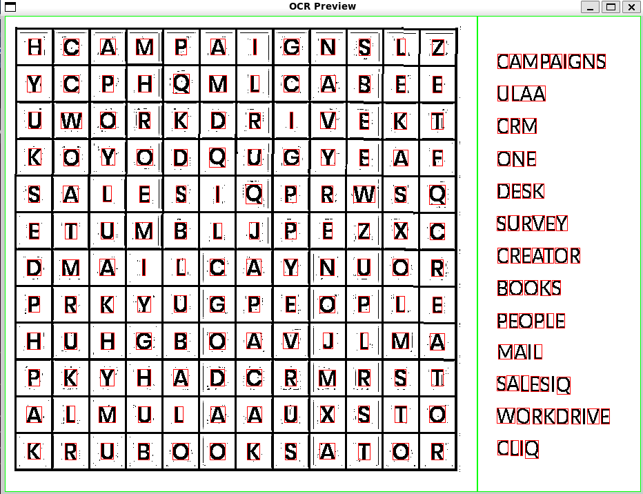
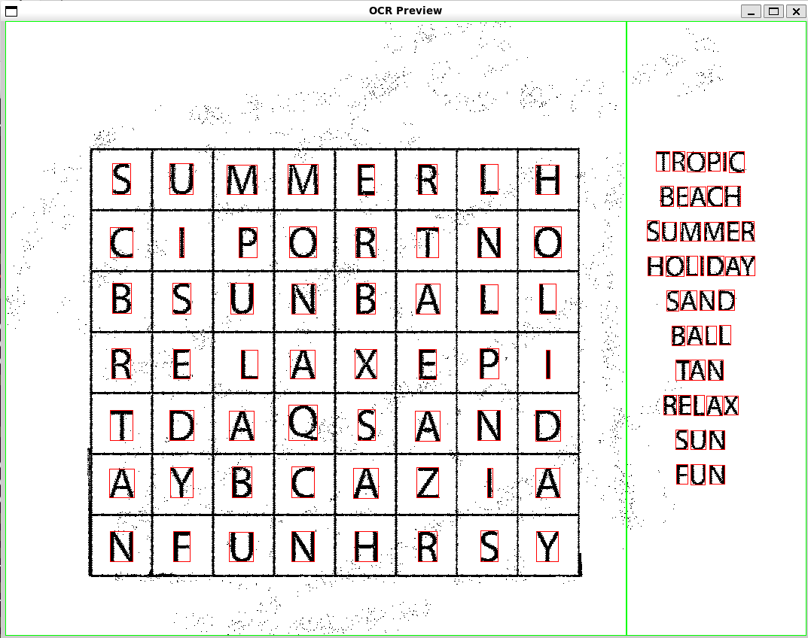
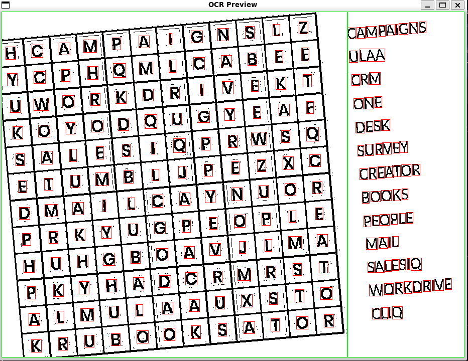
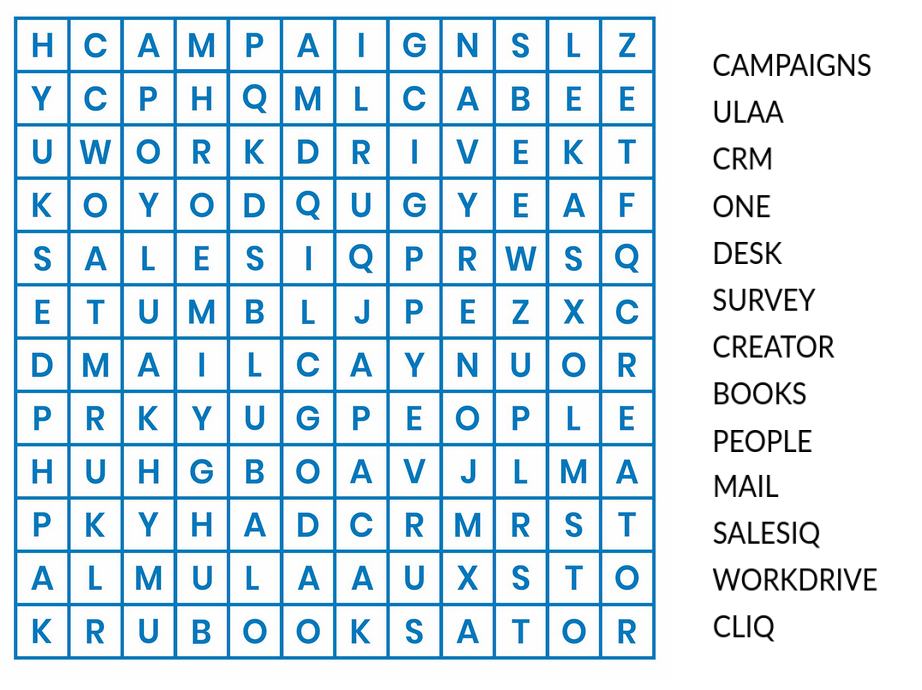
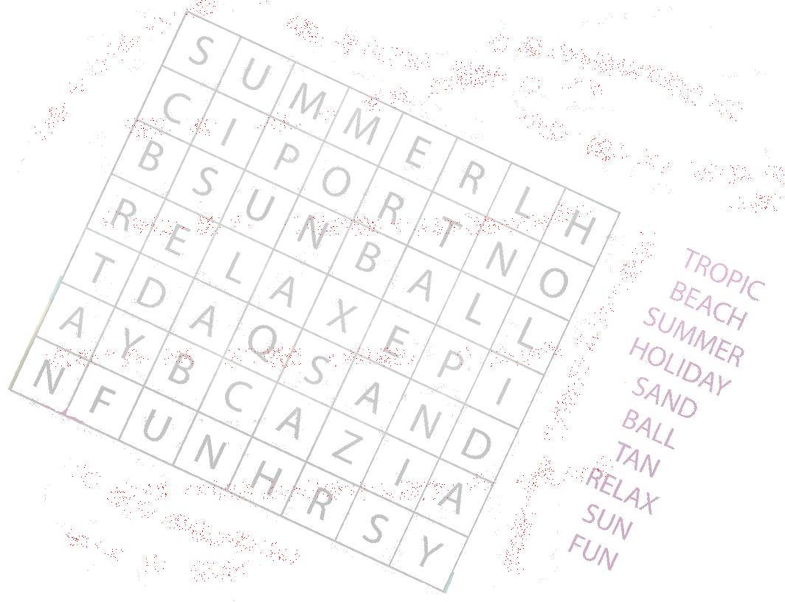

Prétraitement
J'ai conçu une succession d'opérations : passage en niveaux de gris, étirement du contraste, binarisation adaptative à partir de la moyenne des pixels voisins, puis réduction du bruit. Chaque transformation prépare la suivante.
Comment apprendre à un programme à lire des mots mêlés ? Tout commence par les pixels… et quelques algorithmes étudiés en cours. 🐙
Découvrir la soutenance ↓Voici notre véritable diaporama de soutenance. Parcours les diapositives avec les flèches pour découvrir l'architecture, les traitements, le réseau de neurones et l'interface du projet.
NeurOctopus est un projet réalisé à trois : à partir de la photographie d'une grille de mots mêlés, notre programme doit isoler les caractères, les reconnaître, reconstruire les mots et chercher leurs positions dans la grille.
Nous avons choisi de séparer le travail en plusieurs modules écrits en C. Cette architecture permet de tester chaque étape indépendamment, mais elle impose une contrainte : si la première étape produit des caractères mal découpés, toute la suite en pâtit.
Je me suis principalement occupée de la détection et du prétraitement des images. Mon objectif était de rendre des images parfois imparfaites suffisamment lisibles pour que les autres modules puissent travailler : isoler les caractères, repérer la grille et la liste de mots, puis exporter des lettres individuelles.
J'ai conçu une succession d'opérations : passage en niveaux de gris, étirement du contraste, binarisation adaptative à partir de la moyenne des pixels voisins, puis réduction du bruit. Chaque transformation prépare la suivante.
Parcours récursif des pixels noirs adjacents, marquage des pixels visités et création de boîtes englobantes pour repérer les caractères.
Analyse de la densité de pixels pour séparer les zones, puis regroupement spatial des caractères en lignes et colonnes.
Découpage des caractères avec une marge blanche et export des images dans des dossiers organisés, pour la reconnaissance ultérieure.
C'est l'aspect du projet que j'ai particulièrement aimé : réutiliser des notions d'algorithmique vues en cours pour traiter un problème concret de vision par ordinateur.
pixel noir non visité
↓
marquer comme visité
↓
explorer les 4 voisins
↓
mettre à jour les bornes
↓
une boîte par composanteOn peut considérer chaque pixel comme un sommet et ses voisins comme des connexions. Mon flood fill explore récursivement les quatre voisins d'un pixel noir, en évitant de revisiter ceux déjà parcourus. Les coordonnées extrêmes forment ensuite la boîte englobante du caractère.
Après avoir détecté les caractères, je les regroupe selon leur position verticale, puis les trie horizontalement pour retrouver les lignes de la grille. Il s'agit de regroupement spatial par proximité, et non d'un classifieur k-NN.
J'ai appris à ne pas chercher une solution magique : une image exploitable se construit étape par étape, avec des seuils à ajuster et des résultats intermédiaires à vérifier.
Ramener les couleurs à une intensité unique pour simplifier l'analyse.
Étendre les intensités entre 0 et 255 afin de mieux distinguer les lettres.
Comparer chaque pixel à la moyenne de son voisinage, plutôt qu'à un seuil unique.
Écarter certains pixels noirs trop isolés, tout en essayant de préserver les lettres fines.
Explorer les composantes connexes et filtrer les boîtes selon leur taille et leurs proportions.
Reconstruire la grille et exporter les caractères pour les étapes suivantes.
Mon travail fournissait les images de caractères aux étapes suivantes. Mes camarades se sont notamment occupés de la reconnaissance par réseau de neurones et de la résolution des mots mêlés. Nous devions faire correspondre nos formats de données et comprendre les erreurs d'un module à l'autre.
Ce projet m'a fait mesurer à quel point la qualité des entrées et la clarté des interfaces entre modules sont essentielles dans un programme collectif.
Pour tester ma partie du projet, j’ai utilisé SDL2 afin d’afficher les résultats de mes traitements d’image. Les rectangles rouges permettent de visualiser les caractères détectés, et les lignes vertes séparent la grille de la liste de mots. Ces captures correspondent aux essais réalisés sur mon propre module, indépendamment de l’interface finale du projet.



Ces exemples permettent de comparer les images sources aux résultats affichés par mon programme : un moyen très concret de vérifier les contours, les zones et les caractères identifiés.


Ces images documentent le prétraitement et la détection réalisés dans mon module ; la reconnaissance par réseau de neurones et la résolution appartiennent aux autres parties du projet collectif.
Ce projet m'a fait progresser en C, en manipulation d'images et en conception d'algorithmes. J'ai surtout compris qu'un algorithme théoriquement correct ne suffit pas : les images réelles ont du bruit, des variations de lumière, des lettres parfois collées ou abîmées.
Le flood fill récursif, par exemple, est simple à comprendre, mais peut consommer beaucoup de pile sur une grande composante. Le regroupement des caractères repose également sur des seuils qui ne conviennent pas à toutes les images. Avec davantage de temps, j'aimerais améliorer la robustesse sur les images inclinées et les caractères dégradés, et comparer les résultats sur un jeu de tests plus large.
« J'ai adoré découvrir que mes cours d'algorithmique pouvaient réellement m'aider à faire lire une image à un ordinateur. »